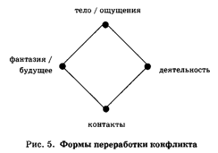
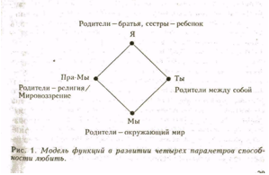
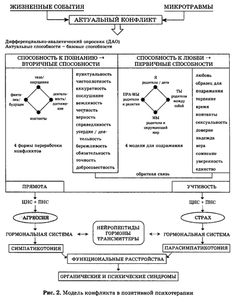

С 1968 года я разрабатываю новый подход к таким понятиям, как самопомощь и психотерапия (дифференциальный анализ), который я называю позитивной психотерапией. Основные черты и приемы этого метода подробно изложены в книге «Позитивная психотерапия: теория и практика нового метода». Здесь я ограничусь кратким обзором.
Позитивная психотерапия имеет три аспекта:
Понятие «позитивная психотерапия» неразрывно связано с межкультурным мышлением. Если исходить из первоначального значения латинского слова «positum», то «позитивный» означает «фактический», «реальный», «имеющийся в наличии». Реально существующими являются не только болезни и нарушения, не только неудавшиеся попытки решения проблем, но также способности и возможности, присущие каждому человеку, которые могут помочь ему найти новые, иные, может быть, лучшие решения. Поэтому мы стремимся не цепляться за привычные, шаблонные оценки конфликтов, болезней и симптомов, а пытаемся их позитивно переосмыслить, увидеть их в ином свете. Особенно важной представляется нам та мысль, что пациент «приносит» с собой на прием к врачу не только болезнь, но и способность преодолеть ее. Задача врача — помочь ему в этом. Применяя позитивный подход, мы пытаемся вместе с пациентом найти альтернативные возможности, решения, которые до этого были за пределами его сознания. Это помогает нам изменить привычную позицию, усвоить модели мышления, отличные от тех, которые только осложняли конфликт.
Фригидность женщины, например в значении «сексуальной холодности» или «неспособности испытывать оргазм», будет по-другому восприниматься супругами, если они примут во внимание иные, «позитивные» свойства этого явления. Одно из альтернативных толкований может быть такое: фригидность — это способность отказать себе в чувственных удовольствиях. Воздействие этого переосмысления выходит за рамки чисто формальной игры словами. Оно затрагивает как представление женщины о самой себе, то есть ее собственное «Я», так и влияние этого нарушения на супружеские отношения, облегчая путь возможного лечения. Подобное можно сказать и о других нарушениях и заболеваниях. Таким образом, для медицины, психотерапии, а также для потенциального пациента позитивный подход является побудительной причиной для переосмысления симптомов и проблем (Н. Пезешкиан «Торговец и попугай»)
Здесь делается попытка не упустить из внимания все возможности, как расстройства, так и способностей. Так, например, зададимся вопросом, какие преимущества имеет застенчивость? Какие функции выполняют нарушения сна? Что значит для меня тот факт, что я боюсь или у меня депрессия?
И заболевания могут интерпретироваться позитивно:
Агрессивность: способность реагировать на что-либо спонтанно, эмоционально и расторможено.
Алкоголизм: способность с помощью алкоголя временно сделать конфликт переносимым.
Амбивалентность: способность не принимать окончательного решения.
Депрессия: способность реагировать на конфликты с глубокой эмоциональностью.
Застенчивость: способность сдерживать себя и действовать по своему убеждению: если я не буду подвергать себя опасности, то мне нечего будет бояться быть задетым.
Инфаркт миокарда: способность принимать близко к сердцу нагрузки и факторы риска.
Клептомания: способность находить что-то, прежде чем другой это потеряет.
Лень: способность избегать требований достижения.
Мазохизм: способность дать возможность партнеру наслаждаться.
Мания: способность испытывать «море по колено», ощущать себя «всемогущим» и не обращать внимания на мелочи жизни.
Нарушение потенции: способность отстраниться от конфликтной сферы сексуальности.
Нарциссизм: способность любить самого себя и переживать свои собственные мнимые слабости позитивно.
Невроз навязчивых состояний: способность осуществлять что-либо с чрезвычайной точностью, добросовестностью, пунктуальностью и последовательностью.
Нервная анорексия: способность обходиться малыми средствами. Способность разделить тяготы мирового голода.
Ночное недержание мочи (энурез): способность плакать нижней половиной тела.
Ожирение: способность доставлять удовольствие и восполнять дефицит внимания при помощи еды. Акцентирование ощущений, таких как вкус, эстетика блюд, широта взглядов в отношении продуктов питания.
Паранойя: способность видеть себя центром мира и его тайных сил.
Преждевременная эякуляция: способность быстро достигать цели.
Психосоматические симптомы: способность языком органов говорить о том, что в данный момент нет других средств справиться с конфликтом.
Распущенность: способность игнорировать принятые нормы или противостоять им.
Ревность: способность любить без того, чтобы своим поведением заслуживать любовь к себе.
Садизм: способность принимать активную роль. Страх одиночества: потребность быть в обществе других людей. Стресс: способность и приспособление организма к новой ситуации. Упрямство: способность сказать нет.
Фиксация: способность придерживаться твердых установок и поведения. Фригидность: способность сказать «нет» своим телом.
Шизофрения: способность отделить невыносимые сферы своего Я и заменить неудовлетворяющий окружающий мир фантастическим внутренним миром.
Экзистенциальная тревога: способность готовиться к будущему и не поддаваться иллюзии безопасности.
То, что с воспитательной и психотерапевтической точек зрения заключает в себе возможность конфликта и личностного роста в области морали, этики и религии, предстает как норма добродетели.
Мы пытались классифицировать эти формы поведения и систематизировать их в опроснике, с помощью которого можно было бы описать содержательные компоненты конфликтов и возможностей пациента в их разрешении. Эти формы поведения, которые мы назвали актуальными способностями, можно разделить на две группы:
Перечень вторичных и первичных способностей (актуальные способности)
|
Вторичные способности |
Первичные способности |
|---|---|
|
Пунктуальность |
Любовь |
|
Чистоплотность |
Образец для подражания |
|
Аккуратность |
Терпение |
|
Послушание |
Время |
|
Вежливость |
Контакты |
|
Честность |
Сексуальность |
|
Верность |
Доверие |
|
Справедливость |
Надежда |
|
Усердие / деятельность |
Вера |
|
Бережливость |
Сомнение |
|
Обязательность |
Уверенность |
|
Точность |
Единство |
|
Добросовестность |
Содержание актуальных способностей формируется в процессе социализации в соответствии с социально-культурной средой, а неповторимые условия индивидуального развития придают им особый отпечаток. Как жизненные принципы они становятся неотъемлемой частью образа «Я» и определяют правила, по которым человек воспринимает себя и окружающий мир и справляется с решением возникающих проблем. Действие актуальных способностей проявляется в следующих четырех сферах: 1) через органы чувств (отношение к собственному телу); 2) через разум; 3) через традиции; 4) через интуицию и фантазию.

Симптоматика: расстройства сна, потеря аппетита, заболевания органов, раздражительность, бесконтрольный прием пищи, витальная депрессия, сексуальные расстройства, утомляемость, боли, адинамия, акустические и оптические галлюцинации, ипохондрические представления, а также нарушения восприятия и влечений и аффективные расстройства могут быть представлены как симптомы в сфере тело/ ощущения. Расстройства мышления и интеллекта, нарушения внимания, памяти, трудности в принятии решения, склонность к рационализации, мечтательность, навязчивости, дереализация и т.д. относятся к разуму и вместе с тем к деятельности. Фиксации, предрассудки, стереотипы, фанатизм, слабость суждений, боязнь правды, чувство ненависти, чувство вины, маргинальность и односторонность связаны с традицией и, таким образом, с контактами. Безудержные фантазии, отстранение от действительности, суицидальные фантазии, сексуальные фантазии, опасения, навязчивые представления, бред отношения и преследования могут быть причислены к сфере фантазия /интуиция и вместе с этим к измерению будущего.
1) Тело (ощущения): на переднем плане стоит тело- Я-восприятие. Как человек воспринимает свое тело? Как переживает он различные ощущения и информацию из окружающего мира? Воспринимаемая в ощущениях информация проходит через цензуру приобретенного масштаба оценки. Отдельные характеристики ощущений могут быть конфликтными в связи с подобного рода переживаниями. При помощи своих ощущений ребенок с самого начала развития устанавливает контакт с окружающим миром. Общая активность контролируется ощущениями. Ритмы сна и питания могут стать важнейшими.
Поражение того или иного органа у пациента с психосоматическим заболеванием становится понятным при взгляде на концепции, которых он придерживается в отношении к телу в целом, отдельным его органам и их функциям, а также к здоровью и болезни. Они определяют в общей взаимосвязи с содержанием конфликта, почему один человек реагирует своим сердцем, другой — желудком, органами дыхания, кожей и т.д. и почему некоторые люди «бегут» в болезнь, тогда как другие всеми силами отрицают физическую слабость и заболевание.
Вопросы к первой сфере переработки (реакции) на конфликты
2) Деятельность (разум): измерение этого имеет особое значение в индустриальном обществе, прежде всего в американо-европейских кругах. Сюда же относятся способы становления норм деятельности и их включения в концепцию Я. Мышление и разум делают возможным систематически и целенаправленно решать проблемы и оптимизировать деятельность. Возможны две разнонаправленные реакции бегства: а) «бегство» в работу; б) «бегство» от требований деятельности. Типичные симптомы — проблемы самооценки, перегрузки, стрессовые реакции, страх увольнения, нарушения внимания и «дефицитарные» симптомы, такие как пенсионный невроз, апатия, снижение активности и т.д. Концепции: «Если ты что-то можешь, тогда ты что-то из себя представляешь»; «Кончил дело — гуляй смело» и «Без труда не вытащишь и рыбки из пруда»; «Время — деньги» и т.д.
Вопросы ко второй сфере переработки конфликтов
3) Контакты (традиция): эта сфера подразумевает способность устанавливать и поддерживать отношения с самим собой, партнером, семьей, другими людьми, группами, социальными слоями и чуждыми культурными кругами; отношение к животным, растениям и вещам. Социальное поведение формируется под влиянием приобретаемого опыта и полученного наследства (традиции), особенно это касается становления наших возможностей налаживать контакты. Существуют социально обусловленные критерии выбора, которые ими управляют: например, человек ожидает от партнера вежливости, искренности, справедливости, аккуратности, общности определенных интересов и т.д. и выбирает себе партнера в соответствии с этими критериями.
Вопросы к третьей сфере переработки конфликтов
4) Фантазии (интуиция): можно реагировать на конфликты, активизируя фантазию, воображая решения конфликтов, представляя мысленно желаемый успех или наказывая и даже убивая в мечтах людей, на которых накопилась злость из-за того, что кто-то был неверен, неправ или придерживается других убеждений. Фантазия и интуиция могут, например, возбуждать и даже удовлетворять потребность при творческих изысканиях и сексуальных фантазиях. В качестве «личного мира» фантазия отгораживает от травмирующих и болезненных вмешательств действительности и создает временно комфортную атмосферу (например, алкоголь, токсикомания). Она может не воспринимать «злое дело» и болезненный разрыв с партнером как состоявшееся; она может, однако, также устрашать, становиться могущественной, делая действительность непереносимой, вследствие проекции собственных страхов. Так воображение смешивается с восприятием и ведет к симптомам, которые встречаются в шизофрении в виде бредовых идей. Чтобы укротить пугающую, динамическую силу фантазии, некоторые люди вырабатывают навязчивое поведение, словно надевают корсет, который им помогает удержать в узде угрожающие фантазии и защищаться от неконтролируемых всплесков чувств. В этой сфере актуальные способности как содержание фантазий также играют главную роль.
Вопросы к четвертой сфере переработки конфликтов
Для понимания конфликтной ситуации необходимо понимание ее фона и определяющих ее концепций. Развитие личности решающим образом зависит от первичных отношений человека. Нам показалось удачным основу предпочтения определенных социальных отношений и отвержение других подходов описать при помощи моделей для подражания.
Предлагаемая схема включает отношения:

Четыре модели для подражания представляют собой возможности реализации всеми людьми своей способности устанавливать отношения. Они охватывают отношения к «Я», «Ты», «Мы» и «Пра-Мы», которые формируются при влиянии примеров из родительской семьи. Актуальные способности могут быть представлены здесь как фильтр социальных отношений: человек отказывается от приглашения гостей, потому что это нарушает его порядок и стоит денег, т.е. затрагивает его концепцию бережливости. Точно так же неудачами может блокироваться отношение к «Я» при недостаточной поддержке (трудолюбие/деятельность) из сферы первичных способностей. Отношение к «Ты» может быть ощутимо нарушено вследствие конфликтов, которые касаются сферы сексуальности, верности, доверия, так же как обманутые ожидания в области честности, справедливости и надежды могут встать на пути отношения к «Пра-Мы».
Отношение к Я (родители/братья — пациент). Отношения, которые складываются у человека к самому себе во многом зависят от того, насколько удовлетворялись его потребности.
Считаются со мной или меня игнорируют? Ответ на вопрос получают непосредственно в родительском доме, и позднее идет сравнение с отношением к братьям н сестрам. При дальнейшей социализации вопрос ставится по-другому: со мной считаются просто потому, что я есть я, или лишь в той степени, насколько я могу быть полезным?
От того, сколько внимания н терпения родители затратили на ребенка, зависит отчасти, кого человек выберет образцом. Этим определяются основные эмоциональные отношения: и начальное доверие или недоверие, надежда или сомнение, позитивная или негативная установка при восприятии самого себя.
Вопросы к первому компоненту, формирующему стереотипы поведения (отношение к Я).
Моделью этого является образец, который родители заложили своим отношением друг к другу. Они живут определенной жизнью, которая становится для ребенка масштабом представления, которое позднее человек связывает с партнерством, браком, сексуальностью и т. д.
Концепции: «Я тоже хочу создать такую же гармоничную семью, как и мои родители», или «Я никогда не женюсь, не буду иметь детей и продолжать всю эту дрянь, которой занимаются мои родители». Большое значение здесь имеет то, как родители относились друг к другу, были ли они разведены, как брак воспринимался пациентом, когда он был еще ребенком.
Вопросы ко второму стереотипу поведения.
С миром вне семьи ребёнок устанавливает контакты по своему : он любознателен, пытается постигнуть мир вокруг себя и преодолевает свой страх перед другими людьми благодаря своему любопытству. Ребёнок учится вступать в контакт с дальними родственниками, чужими людьми. Таким образом, родители дают модель, образец внешних контактов.
Концепции : «Гость — дар господен», «Родственники, как ботинки, чем с ними теснее, тем они больше жмут», «Ты сам ничто, твой народ — всё», «Мы — сами по себе, другие — тоже», «Мы все — лисья одной ветки и плоды одного дерева», «Лучше крысы в подвале, чем родственники в доме».
Вопросы к третьему типу поведения.
Семья, несмотря на свои особенности, сама не вырабатывает собственных правил. Они связаны с правилами, порядком и законами, которые ей предлагаются общественными, религиозными и политическими группировками и институтами. Каждое общество имеет собственный масштаб ценностей и принципов так же, как и каждая семья.
В этой области мы спрашиваем пациента об идеологии н религии его родителей, обсуждались ли в доме духовно-религиозные темы, например, о смысле жизни, о жизни после смерти и т. п. Мы знаем, что у каждого человека от природы есть потребность в любые времена придерживаться основ какой-либо религии, н даже если они утверждают, что антирелигиозны, они придерживаются «эрзац-религии». Отношение человека к ПРА-МЫ прежде всего зависит от отношения его родителей к религии и их мировоззрения. Так как родители, во всяком случае, в первые годы жизни, выполняют по отношению к ребенку божественные функции, т. е. являются всемогущими, всезнающими и непогрешимыми, то такое их восприятие передается на ожидания, которые возлагаются на бога, на неизвестное, непознаваемое.
Вопросы к четвёртому стереотипу поведения.
Предпосылки для этого — упомянутые направления развития базовых способностей (4 сферы способностей к познанию и любви) в их индивидуальной форме: как результат формируются готовность к поступкам и образ поведения с их аффективным и эмоциональным компонентами, которые вливаются в определяемую как ключевой конфликт дихотомию учтивость — прямота:
— учтивость означает способность быть внимательным, подчиняться, говорить «Да» ценой интуитивного отказа и эмоциональной реакции страха— прямота как способность открыто выражать потребности, стоять за себя и утверждать себя определяет сопутствующий риск агрессии
Этот ключевой конфликт мы считаем центральной «точкой включения», где решается дальнейшее направление переработки конфликта.
В нашей модели мы рассматриваем ключевую точку учтивость — прямота как самое уязвимое место для следующей схемы возникновения симптома: реакциям учтивости соответствует в эндокринном и медиаторном механизмах ЦНС реакция страха; реакциям прямоты соответствует в ЦНС агрессия (Н. Пезешкиан «Психосоматика и позитивная психотерапия»).
